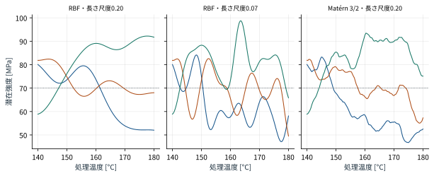
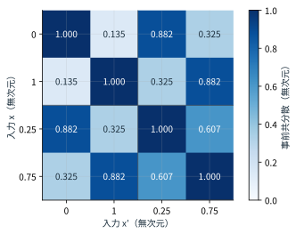

第3章 ガウス過程の基礎
学習目標 共分散行列を作り、カーネルの種類と長さ尺度が事前の関数に及ぼす影響を読む。
まだ測定していない複数の温度で、材料の強度は一緒にどう変わるでしょうか。第2章の二変量正規分布を出発点に、任意の有限個の温度での強度をまとめて扱うガウス過程を学びます。カーネルから共分散を作り、測定前の関数を何本かサンプルし、長さ尺度やカーネルを変えたときの違いを調べます。
3.1 少数点の関数値を一緒に発生させる
正規化温度 \(x=0,0.25,0.75\) での潜在値を一緒に発生させます。まず共分散行列を作ってから、三つの値を持つ正規分布を指定します。次の小例は無次元の検算です。RBFKernel は二つの入力の距離から共分散を計算します。lengthscale はその距離を測る尺度です。
第3章のNotebookで、行列とサンプルを確かめられます。
import torch
from gpytorch.kernels import RBFKernel
from experiment import DTYPE, setup
setup()
x = torch.tensor([[0.0], [0.25], [0.75]], dtype=DTYPE)
kernel = RBFKernel().to(dtype=DTYPE)
kernel.lengthscale = 0.5
with torch.no_grad():
covariance = kernel(x).to_dense()
prior = torch.distributions.MultivariateNormal(
torch.zeros(3, dtype=DTYPE), covariance_matrix=covariance,
)
print(covariance)
print(prior.sample())入力は3行1列で、共分散行列は \(3\times 3\) です。サンプルの三つの値は、一つの関数をこの三つの温度で見た組です。例えば \(x=0\) と \(0.25\) の共分散は約0.882、\(x=0\) と \(0.75\) の共分散は約0.325です。第2章と同じく対角は各点の分散です。この例ではすべて1です。非対角の違いが、サンプルした値が一緒に動く程度に現れます。

図の各線は、サンプルした有限個の点を見やすく結んだものです。左と中央を比べると、中央では同じ温度差でも値が離れやすく、短い間隔で山や谷が現れます。左と右では近い温度どうしの変わり方に注目します。三つとも点ごとの平均と分散は同じで、図の違いは主に点と点の共分散に由来します。
3.2 有限次元分布とガウス過程の定義
測定前の未知関数を \(f\) とします。任意の有限入力集合 \(X=(x_1,\ldots,x_n)\) での関数値 \(\mathbf f_X=(f(x_1),\ldots,f(x_n))^{\mathsf T}\) が同時正規分布に従うとき、\(f\) をガウス過程（GP）と呼びます。平均関数を \(m(x)\)、共分散関数を \(k(x,x')\) として、
\[ \mathbf f_X\sim\mathcal N(\mathbf m_X,K_{XX}), \qquad (\mathbf m_X)_i=m(x_i),\quad (K_{XX})_{ij}=k(x_i,x_j) \tag{3.1}\]
と書きます。\(K_{XX}\) が特異な場合も、線形結合として定義される退化正規分布を含みます。例えば同じ温度を入力の列に二度入れれば、潜在関数値は同じ確率変数です。
入力点を三つから四つへ増やした場合、四変量正規分布から追加点を除いた周辺は、元の三点の平均・共分散を使った分布に一致します。この整合性により、点の取り方を変えても同じGPを扱えます。実装では、予測と描画に必要な有限集合を選び、その集合で行列を作ります (Rasmussen と Williams 2006年, sec. 2.2)。
3.3 平均関数と半正定値カーネル
平均関数 \(m(x)\) は、測定前に考えている強度の中心です。上の図はどの温度でも70 MPaを中心にしました。共分散関数 \(k\) はカーネルとも呼ばれ、二つの入力で関数値がどれだけ一緒に動くかを指定します。\(k(x,x)\) はその一点での分散で、二点の標準偏差が正なら、\(k(x,x^\prime)\) をその積で割ると相関が得られます。
共分散行列は対称で半正定値です。どの実ベクトル \(\mathbf a=(a_1,\ldots,a_n)^{\mathsf T}\) に対しても、線形結合の分散は
\[ \mathrm{Var}\!\left(\sum_i a_i f(x_i)\right) =\mathbf a^{\mathsf T}K_{XX}\mathbf a\ \ge 0 \tag{3.2}\]
です。したがって、使うカーネルは、任意の有限入力集合から作る行列に対してこの条件を満たす必要があります。例えば、両点の分散を1とし、共分散を1.2と置くと、\(\mathbf a=(1,-1)^{\mathsf T}\) の分散が \(2-2(1.2)=-0.4\) となり、この組は共分散行列にできません (Rasmussen と Williams 2006年, sec. 4.1)。
NotebookはCholesky分解でサンプルを得るため、密な入力集合の対角に微小な値を足しています。この教材では補正量は \(10^{-8}\,\mathrm{MPa}^2\) です。これは数値安定性のためのjitterで、第4章でデータの測定誤差を表す分散とは役割が異なります。
3.4 RBFとMatérn
一次元の正規化入力で距離を \(r=|x-x'|\) とします。RBFカーネルとMatérn 3/2カーネルは、信号分散 \(s_f^2>0\) と長さ尺度 \(\ell>0\) を使って、次のように書けます。
\[ \begin{aligned} k_{\mathrm{RBF}}(x,x') &= s_f^2\exp\!\left(-\frac{r^2}{2\ell^2}\right),\\[2pt] k_{\mathrm{Mat\acute ern}\,3/2}(x,x') &= s_f^2\left(1+\frac{\sqrt{3}\,r}{\ell}\right) \exp\!\left(-\frac{\sqrt{3}\,r}{\ell}\right). \end{aligned} \tag{3.3}\]
どちらも \(r=0\) で \(s_f^2\) になります。RBFは滑らかな変化を表す事前分布を与え、Matérn 3/2は近い点どうしでも変化が比較的粗い分布を表せます。同じ \(\ell\) を指定しても、距離に対する共分散の形は揃いません。RBFの例では \(r=\ell\) の共分散は \(s_f^2 e^{-1/2}\) です。図を読むときはサンプル3本の特徴と、カーネルの式が与える傾向を合わせて見ます (Rasmussen と Williams 2006年, sec. 4.2)。
3.5 長さ尺度、振幅と入力の単位
\(\ell\) を小さくすると、同じ距離 \(r\) でも \(r/\ell\) が大きくなり、共分散が小さくなります。例えばRBFで \(\ell=0.20\) とした場合、ここでの温度変換では 8 °C が一つの長さ尺度に当たります。温度を °C のまま使うと数値の長さ尺度も40倍になります。入力を正規化する際は、範囲や単位を記録します。
\(s_f\) は各点の潜在強度の事前標準偏差です。第3.1節の図は一つの値 \(s_f=12\) MPaに固定して、\(\ell\) とカーネルだけを変えました。振幅だけ変えるなら曲線の縦方向の偏差が変わります。二つの温度の変化幅も、共分散から予想できます。各点の分散が \(s_f^2\) なら
\[ \mathrm{Var}\{f(x)-f(x')\} = 2\{s_f^2-k(x,x')\}. \]
例えば \(r=0.20\)、\(s_f=12\) MPaでRBFを使うと、\(\ell=0.20\) のとき二温度の差の標準偏差は約10.6 MPa、\(\ell=0.07\) のとき約16.8 MPaです。同じ点ごとの不確かさでも、どの程度一緒に動くかで、差の不確かさが変わります。測定後にデータと整合する \(\ell\) や \(s_f\) を求める方法は、第4章で扱います。
3.6 第4章で使う共分散行列を作る
次は、観測位置を \(X=(0,1)\)、予測位置を \(X_*=(0.25,0.75)\) とし、4点の順を \((0,1,0.25,0.75)\) とします。信号分散1、長さ尺度0.5のRBFで共分散を計算します。

左上が \(K_{XX}\)、右上が \(K_{X*}\)、左下が \(K_{*X}\)、右下が \(K_{**}\) です。例えば \(x=0\) と \(x_*=0.25\) の共分散は右上ブロックで読めます。距離が近いので約0.882です。第4章では観測位置に測定誤差を加えます。独立で同じ分散の誤差なら、左上の対角だけに観測分散を足します。
Notebookで作った4行4列の行列を、第4章の二点の検算に使う事前共分散と照合しました。この実行での最大絶対差は 0 です。
この章の事前サンプルは、観測前に高い確率を置く関数の形を調べる手段です。学習済みモデルの当てはまりを調べる場合は、観測後の予測や保留データでの誤差を確認します。入力の単位やカーネルの仮定が変わると、離れた温度での推論も変わります。
- 確認。 信号分散1、長さ尺度0.5のRBFで、\(x=0\) と \(x'=0.5\) の共分散を求めましょう。
- 操作。 NotebookのRBFの長さ尺度0.20を0.40に変え、同じ距離に対する共分散と事前サンプルを比べましょう。
- 発展。 \(X=(0,1)\) における観測ノイズの分散を0.1とします。図のどの行・列の対角に0.1を足せばよいでしょうか。
次章へ。 第4章では、この四つのブロックを第2章の条件付き正規分布の考え方と組み合わせ、観測後の平均と区間を求めます。